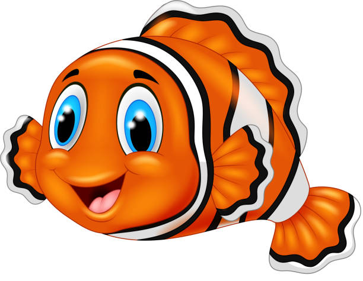

Callicoon Clownfish
Mascot is "Clownfish". Clownfishes are the fishes from subfamily Amphiprioninae
in the family Pomacentriade. These are tiny, having bright organe color
with three distinctive white bars. These are also considered as good pets because of
their playful and fun personalities.
Fun facts about Clownfish
-
Schools of clownfish have a strict hirearchy, with the most aggressive female
at the top.
-
Clwonfish communicates by making popping and clcking noises.
-
Male clownfish are dedicated fathers. They will prepare nest for the females,
guard the eggs, and clean the nest.
-
All clownfish are born male. When the dominant female dies, the dominant male
will turn itself into a female.

Back to Home Page